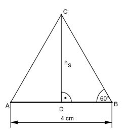
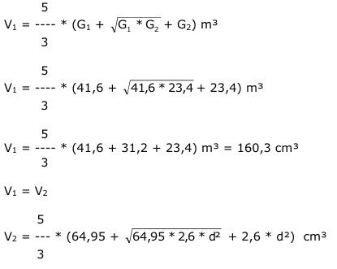
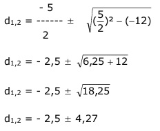

Aufgabe 278 Ein Kunststoffhalbzeug in der Form eines sechseckigen Pyramidenstumpfes mit der Grundkante a = 4 cm, der Deckkante b = 3 cm und der Höhe h = 5 cm wird in einen gleich hohen Stumpf mit der Grundkante c = 5 cm umgepresst. Welche Seitenlänge d hat die neue Deckkante? Alle Winkel in dem gleichseitigen Teildreieck eines regelmäßigen Sechsecks gleich 60°. Teildreieck der Grundfläche:  Im Dreieck DBC gilt: DB = AB/2 = 4 cm/2 = 2 cm hS tan 60° = ----- | * DB DB hS = DB * tan 60° = 2 cm * 1,732 = 3,464 cm Für die Deckfläche gilt entsprechend: hS1 = 3 cm/2 * tan 60° = 2,6 cm Für Höhe hSneu in der neuen Grundfläche gilt: hhSneu = 2,5 cm * tan 60° = 4,33 cm Für die Höhe hS1neu in der neuen Deckfläche gilt: hS1neu = e/2 cm * tan 60° = e * 0,866 cm Grundfläche G1: AB * DC 4 cm * 3,464 cm G1 = 6 * --------- = 6 * ------------------ = 41,6 cm² 2 2 Deckfläche G2: 3 cm * 2,165 cm G2 = 6 * ------------------ = 23,4 cm² 2 5 cm * 4,33 cm Grundfläche G1neu = 6 * ------------------ = 64,95 cm² 2 d cm * d * 0,866 cm Deckfläche G2neu = 6 * ---------------------- = 2,6 * d² cm² 2 Ursprüngliches Pyramidenstumpfvolumen V1:  5 160,3 = --- * (64,95 + 13 * d + 2,6 * d²) cm³ 3 160,3 = 108,25 + 21,7 * d + 4,33 * d² |-160,3 4,33 * d² + 21,7 * d - 52,05 = 0 |:4,33 d² + 5 * d - 12 = 0 p = 5 ; q = - 12  d1,2 = - 2,5 ± 4,27 d1 = - 2,5 + 4,27 = 1,77 cm d2 = - 2,5 - 4,77 = - 7,27 keine Lösung, negative Länge